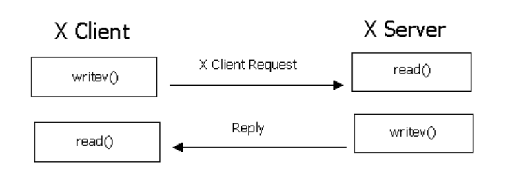

1. Linux图形界面的基本概念与实现
1.1. 基本认知
- 操作系统与应用程序
linux本身没有图形界面，linux现在的图形界面的实现只是linux下的应用程序实现的。
图形界面并不是linux的一部分，linux只是一个基于命令行的操作系统。
1.2. X Window System Protocol
X视窗系统协议（X Window System Protocol）又称为：X 视窗（X Window）/X 协议（X Protocol），或者简写为X ，是用于 UNIX 和 Linux 图形显示的 X 视窗系统协议，这是一个开放的协议规范
注意： 这里的Window 是视窗的意思，与 Window`s` 系统没有关系
X Window System 协议由客户端和服务端组成:
- 服务端 X Server负责管理主机上与显示相关的硬件设置（如显卡、硬盘、鼠标等），它负责屏幕画面的绘制与显示，以及将输入设置（如键盘、鼠标）
- 客户端 X Client 根据系统设置的DISPLAY环境变量，将图形显示请求发送给相应的X Server。处理程序的运行

1.2.1. X11
X协议当前版本为11，俗称X11。
1.2.2. X11R6
/usr/X11R6是XFree的默认安装目录
X11R6 实际上是X Protocol version 11 Release 6（X协议第11版第六次发行） 的意思，就是说目前用的X协议是第11版的，然后经过了6次小的修正。
不同版本的X协议是不能通信的，现在的X服务器软件和X应用程序都遵循X11R6.
实践
# 开启 startx [ [ client ] options ... ] [ -- [ server ] [ display ] options ... ] startx # 启动有3种方式 ## 1 指定client和server， 例如： startx /usr/bin/xclock -- /usr/bin/X :0 ## 2. 启动server 和 client $HOME/.xserverrc $HOME/.xinitrc ## 3.启动DE startx
1.3. window manager
窗口管理器(window manager,WM) ，可以实现 最大化，最小化，移动，关闭窗口等功能，这些功能不是X服务器来负责完成的.
twm
twm是Tab Window Manager for the X Window System的简称，它是一个窗口管理器，初次发布于1988年4月，是个非常容易上手的Window Manager。不像其他的X程序，它没有基于任何GUI组件，而是直接使用的XLib，这样带来的好处就是：小、更方便的配置。所谓窗口管理器，它是一个特殊的程序，它用来给X程序提供诸如：标题的绘制、窗口阴影、窗口图标化、用户自定义宏、鼠标点击、键盘焦点、缩放等功能。
1.4. 实现X协议的应用
1.4.1. XFree86
XFree86 只是实现X协议的一个免费X服务器软件。
1.4.2. MOTIF
1.4.3. xorg
The X.Org(xorg,XOrg Foundation Open Source Public Implementation of X11 ) project provides an open source implementation of the X Window System.
参考官方文档：
https://www.x.org/wiki/
xorg是X协议的一个的官方开源实现，负责底层的操作当你运行一个程序的时候，这个程序会连接到X server上，由X server接收键盘鼠标输入和负责屏幕输出窗口的移动，窗口标题的样式等。
Xorg自带窗口管理器的twm
# 安装 sudo apt install xorg
1.5. Desktop Environment
DE桌面环境：窗口管理器+面板+文件管理器+配套软件......
1.5.1. GNOME
GNOME是GNU Network Object Model Environment 的缩写，是一个功能强大的综合环境。也是Linux下最流行的桌面环境
主要流程版本有：
- GNOME 2
- GNOME 3
1.5.2. KDE
KDE 是K Desktop Environment 的缩写。他不仅是一个窗口管理器，还有很多配套的应用软件和方便使用的桌面环境，比如任务栏，开始菜单，桌面图标等等。
1.5.3. Unity
Unity是一款Ubuntu自家的桌面环境，并面向Ubuntu推出和开发。目前还没有其它Linux发行版采用Unity作为桌面方案。
sudo apt update sudo apt install ubuntu-unity-desktop # 查看 unity 版本 unity --version
1.5.4. Xfce
从传统角度讲，Xfce仅次于GNOME与KDE的第三大人气选项，它在轻量化水平上稍优于KDE与GNOME。而在GNOME 3正式发布之后，Xfce已经成为最顶尖的“传统”Linux桌面环境。
1.5.5. Cinnamon
Cinnamon 原本专门面向Linux Mint所打造，但如今多种Linux发行版上有着不错的表现，具体包括Ubuntu、Fedora以及Debian等。
1.5.6. MATE
MATE与Cinnamon是两种相似的桌面环境，同时受到Linux Mint支持。尽管Cinnamon采用了GNOME 3中的一部分代码并将其fork成一套传统桌面，MATE却采用更加陈旧的GNOME 2桌面代码，并Linux发行版中进行更新。除了Mint之外，MATE也适用于Fedora、Ubuntu以及Debian等。
1.5.7. Lxde
作为一款轻量级兼用户友好桌面环境，Lxde相较于现代Linux桌面环境，对于图形硬件、CPU时钟频率以及内存的配置要求较低。虽然看不到炫目的图形特效，但能获得最为基本的轻量级桌面环境使用体验，并启动并管理应用程序。
2. 远程桌面连接
通过一张表格来展示xdrp和vnc的主要区别
| 项目 | xrdp | vnc |
| ------------ | ------------ | ------------------- |
| BIOS屏幕显示 | 能 | 不能 |
| 全彩支持 | 能 | 能 |
| 更改分辨率 | 能 | 能 |
| 多显示器 | 只有一个屏幕 | 多显示器支持 |
| 图像传输 | 图像传输 | 图像和图形传输 |
| 视频播放支持 | 不能 | GPU加速支持 |
| 音频传输 | 不能 | 双向语音可以控制 |
| 鼠标控制 | 服务器端控制 | 服务器端控制 |
| USB传输 | 不能 | USB可以通过网络传输 |
2.1. VNC/Virtual Network Console
2.1.1. TightVNC
TightVNC is a free remote control software package. 官网
tightvncserver
2.2. xrdp
xrdp（open-source Remote Desktop Protocol server） 包 使用rdp协议访问远程Linux桌面
# 安装xrdp包 apt install xrdp # 启动xrdp，并设置为开机启动 systemctl start xrdp systemctl enable xrdp # 查看状态 systemctl status xrdp.service # 重启与停止 systemctl restart xrdp systemctl stop xrdp
xrdp会占用三个端口来提供服务，分别是3389、3350、5910。
如果没有开启5910，在windows连接的时候会出现connection log，里面会显示出错原因，就是没有5910的服务。
# 更新系统源 sudo apt-get update #sudo apt-get upgrade # sudo apt-get install tightvncserver xrdp # 安装 sudo apt-get install xubuntu-desktop
一键安装
sudo apt-get update sudo apt-get install xorg xfce4 xrdp -y sudo sed -i 's/port=3365/port=3365/g' /etc/xrdp/xrdp.ini sudo echo xfce4-session >~/.xsession sudo service xrdp restart